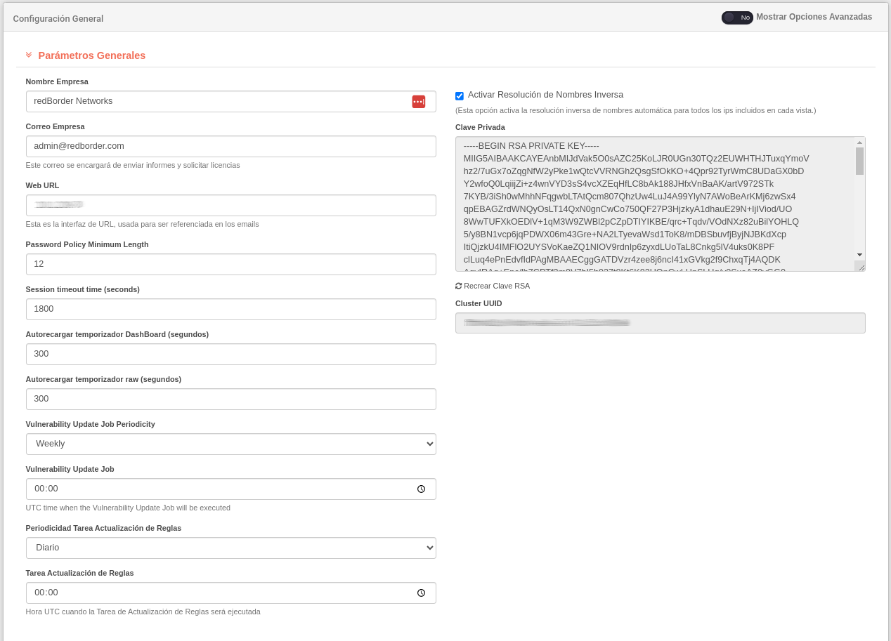

Configuración general¶
La opción Configuración General de la sección Herramientas del área de configuración de la barra de menú, nos muestra una interfaz cuya edición se determinará tanto para la configuración de la plataforma como para la infraestructura de la red.

Configuración General: Configuración general del Manager de Redborder
Ten en cuenta...
Para ver todas las secciones, se recomienda habilitar la opción Mostrar opciones avanzadas ubicado en la parte superior derecha de la pantalla en la configuración general.
En esta pantalla puede editar los parámetros tanto del Manager como de los módulos que se han registrado. Las secciones que se muestran dependerán de las aplicaciones integradas en la plataforma Redborder.
Para realizar una configuración básica en el Manager, el usuario puede editar parámetros generales, características de las aplicaciones, configuración del servidor, red, rutas, geolocalización de las IPs, entre otros parámetros.
Vamos a hacer un recorrido general a través de todas las categorías de la configuración general disponible:
Parametros generales¶
En esta sección, el usuario puede cambiar los siguientes elementos:
- Nombre empresa: nombre de la compañía que usa Redborder.
- Correo de la empresa: correo electrónico de la empresa. Se utilizará como remitente de informes y gestión de licencias.
- URL de la Web: esta es la interfaz de URL, usada para ser referenciada en los emails.
- Largo mínimo de contraseña: indica el número mínimo de caracteres que debe tener una contraseña para ser aceptada en la plataforma.
- Temporizador para cerrado de sesión: tiempo en segundos que la plataforma esperará para cerrar la sesión de algún usuario inactivo.
- Tiempo de refresco del dashboard: periodo del refresco del dashboard en segundos.
- Tiempo bruto de recarga automática: periodo de actualización para la interfaz en segundos.
- Periodicidad de actualización de información de vulnerabilidades: periodicidad para actualizar la información disponible sobre vulnerabilidades.
- Hora de actualización de información de vulnerabilidades: hora en UTC en la que se ejecutará el trabajo de actualización de reglas la información sobre vulnerabilidades.
- Periodicidad de actualización de reglas de snort: periodicidad para actualizar las Reglas.
- Hora de actualización de reglas de snort: hora UTC en que se ejecutará el trabajo de actualización de reglas.
- Activar resolución de nombres inversa: si está marcada, la plataforma intentará resolver todas las IPs en cada vista por su dominio correspondiente.
Otros elementos que el usuario no puede cambiar, son:
- Clave privada: llave privada utilizada por el sistema para comunicarse entre los miembros del clúster (en caso de existir) y con los sensores (IPS o Proxy en caso de haber alguno).
- UUID del clúster: valor utilizado por el sistema como identificador del clúster de managers. La licencia está relacionada a este identificador.
Importante
Todos los parámetros definidos en esta interfaz son heredados por aquellos elementos que se encuentran en niveles inferiores en un estado dependiente (dominios, sensores). Para modificar esta información, el usuario debe escribirla o editarla.
Banner¶
Esta sección permite al usuario agregar el texto que desee a la pantalla de inicio de sesión para la web gracias al campo Banner de inicio de sesión. También es posible agregar un banner al inicio de sesión por consola con el campo Banner de línea de consola.
Por defecto, estos campos no contienen texto, por lo que no se mostrará ningún mensaje a la hora de iniciar sesión.
Certificados HTTP SSL¶
Permite establecer certificados SSL para comunicaciones seguras.
Servidores¶
Configuración de servidores Syslog, MTA, NTP y habilitar la configuración de proxy.
Reglas predeterminadas¶
Configuración de reglas predeterminadas para cargar o eliminar del almacenamiento los datos de los módulos. Se puede elegir guardar la totalidad de los datos o guardar los últimos datos recibidos de un período en un tiempo determinado.
A la derecha se muestra un resumen sobre con los parámetros indicados para almacenar los datos.
Monitoreo y registros¶
Esta sección le ayuda a monitorizar la infraestructura de Redborder. En el campo Servidores Syslog debe indicar en qué servidor remoto se enviarán los registros.
Debe seleccionar qué protocolo y qué modo Syslog desea utilizar para los envíos.
Ten en cuenta...
Se recomienda el protocolo TCP para garantizar un envío seguro. Elija esta opción siempre que sea posible.
La sección New Relic le permite informar a la nube de New Relic. En este caso, el usuario debe indicar el número de su licencia de New Relic y, si tiene un grupo de clúster, escriba su nombre.
La activación de la verificación Habilitar Plugins es opcional porque este es un servicio de pago. Active Habilitar APM en caso de monitoreo web.
Amazon Cloudwatch¶
Si el usuario desea enviar sus registros a este servicio de Amazon, se deben completar todos los campos mostrados con la información que le provee su servicio contratado.
Google Maps API¶
Es posible vincular Redborder con la API de Google Maps para obtener mejor información de ubicación mediante la llave de la API o el ID del cliente que le provee este servicio.
Segmentos Backup (WIP, S3 remoto)¶
Permite una copia de seguridad de los datos del usuario en un servidor remoto o base de datos. Para esto, es necesario indicar el nombre de host, el depósito y la clave de acceso secreta.
Anomalías¶
Para activar la detección de anomalías despliegue la sección Outliers y haga click en Enable anomaly detection functionality.
Si desea desactivar la opción, simplemente desmarque esa opción.
OpenWeatherMap¶
OpenWeatherMap se utiliza en el módulo de movilidad para enriquecer los datos de movilidad con información meteorológica. Este campo permite al usuario ingresar su clave API de OpenWeatherMap para realizar el enriquecimiento.
Redes Permitidas¶
En esta sección, se indican las redes cuyo tráfico pasará sin inspección del paquete, porque las redes se consideran "fiables".
Agregar una nueva red: haga clic en el botón Agregar e indique la IP de la red.
Para eliminar una red de la lista, use el icono Eliminar.
Redes no Permitidas¶
Lista de redes cuyo tráfico debe bloquearse debido a la mala reputación.
Agregar una nueva red: haga clic en el botón Agregar e indique la IP de la red.
Para eliminar una red de la lista, use el icono Eliminar.
Rutas de Red¶
En esta sección, el usuario definirá las rutas de red para el Manager.
Agregar una nueva red: haga clic en el botón Agregar e indique la ruta IP de la red.
Para eliminar una ruta de red de la lista, use el icono Eliminar.
Fixed Hosts¶
En esta sección, el usuario definirá las rutas de red para el Manager.
Agregar una nueva red: haga clic en el botón Agregar e indique la IP de la red.
Para eliminar una red de la lista, use el icono Eliminar.
GeoIP¶
Para habilitar la función Geo Protection es necesario tener una base de datos de geolocalización actualizada para evitar errores en la geolocalización de IP. Redborder se ha configurado para admitir solo el formato de base de datos Maxmind.
Estos son los tipos de bases de datos que se admiten para las versiones IPv4 e IPv6 (formato binario de GeoIp antiguo):
- País: determina el país de un visitante de Internet en función de su dirección IP.
- Ciudad: indica el país, subdivisiones, ciudad, código postal, latitud y longitud asociados con las direcciones mundiales IPv4 e IPv6.
- ASN: la base de datos GeoIP2 de IP anónima contiene datos sobre las direcciones IP de las redes que anónimo ha utilizado de diversas maneras.
Descargue todos los archivos del sitio web de Maxmind y descomprímalos. Solo es posible cargar archivos con formato .dat. Para esto, haga clic en Seleccionar archivo
Ajustes de Logstash¶
En esta sección, el usuario puede seleccionar desde la interfaz web los diferentes pasos adicionales para el enriquecimiento de datos en logstash (disponible para el módulo Tráfico, Intrusión y Movilidad). Desactivar estas opciones supondría una mejora en la gestión de recursos y rendimiento general, pero perdería las funcionalidades descritas a continuación. Es recomendable mantenerlas activas.
- MAC Scrambling: Permite proteger la MAC del sensor, para ello se utiliza una clave codificada hexadecimal que se combina con una MAC falsa. Esto permite a su vez obtener la MAC real del sensor y proporcionar seguridad para no comprometer el servicio que se presta.
- Geo IP: Permite proteger la MAC del sensor, para esto se utiliza una clave codificada hexadecimal que se combina con una MAC falsa para obtener la MAC real de la misma.
- MAC Vendor: El proceso de traducción de la MAC incluido en el evento permite obtener el nombre del fabricante del dispositivo. Este proceso se compara en un archivo almacenado dentro del sistema.
- Darklist: Es un servicio que se encarga de recuperar una lista de IP que son maliciosas y almacenar múltiples valores como puntuación, tipo de amenaza, país, latitud, longitud... en el sistema, permitiendo así realizar operaciones de modificación en los campos del evento. Los archivos se actualizan cada día.
- Enriquecimiento múltiple: habilita el uso de información de múltiples módulos de la plataforma para enriquecer la información del módulo de tráfico.
Widgets en la Vista General¶
Con esta configuración, el usuario puede elegir qué información verá presentada en la barra lateral izquierda de la vista general, al entrar en la plataforma web. Todo lo que debe hacer el usuario es marcar o desmarcar los widgets deseados para que estos sean visibles o no en la Vista General. Todos los widgets se muestran por defecto.